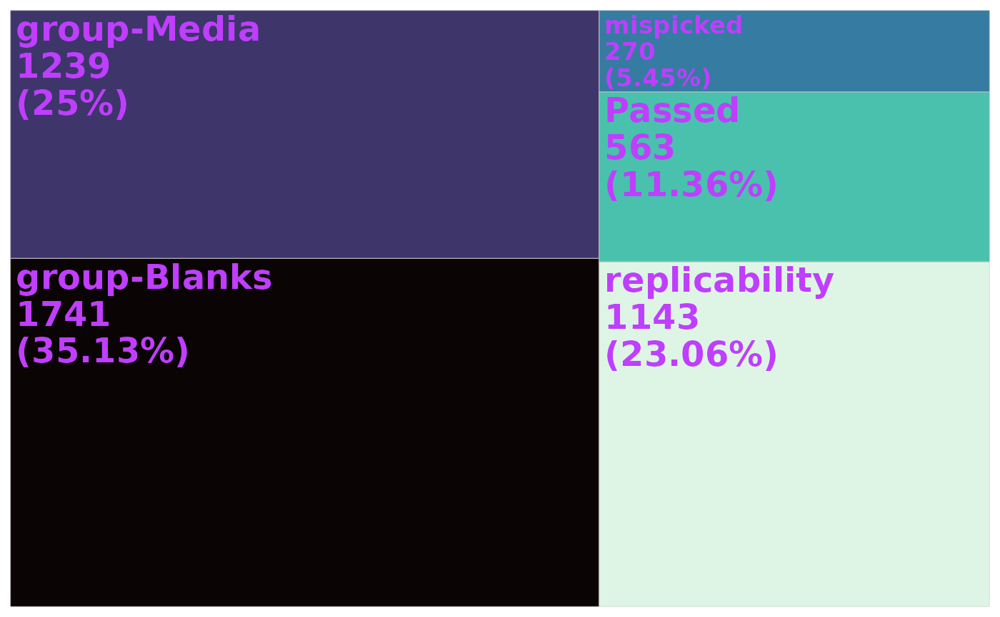

Load data into R
mpactr requires 2 files as imput: a feature table and metadata file. Both are expected to be comma separated files (.csv).
- peak_table: a peak table in Progenesis format is expected. To export a compatable peak table in Progenesis, navigate to the Review Compounds tab then File -> Export Compound Measurements. Select the following properties: Compound, m/z, Retention time (min), and Raw abundance and click ok.
- metadata: a table with sample information. At minimum the following columns are expected: Injection, Sample_Code, Biological_Group. Injection is the sample name and is expected to match sample column names in the peak_table. Sample_Code is the id for technical replicate groups. Biological_Group is the id for biological replicate groups. Other sample metadata can be added, and is encouraged for downstream analysis following filtering with mpactr.
To import these data into R, use the mpactr function
import_data(), which has the arguments:
peak_table_file_path and meta_data_file_path.
This tutorial will show you examples with data from the original mpact
program, found on GitHub.
This dataset contain 38 samples for biological groups solvent blanks,
media blanks, Streptomyces sp. PTY08712 grown with (250um_Ce) and
without (0um_Ce) rare earth element cerium. For more information about
the experiments conducted see Samples,
Puckett, and Balunas 2023.
The original program has sample metadata split across two files: the
sample list and metadata. mpactr accepts a single file, so we need to
combine these in one prior to import with
import_data().
Load the sample list and metadata files.
samplelist <- read_csv("https://raw.githubusercontent.com/BalunasLab/mpact/main/rawdata/PTY087I2/samplelist.csv")
#> Rows: 38 Columns: 8
#> ── Column specification ────────────────────────────────────────────────────────
#> Delimiter: ","
#> chr (4): Injection, MS method, LC method, Sample_Code
#> dbl (1): Injection volume
#> lgl (2): File Text, Sample_Notes
#> time (1): Vial_Position
#>
#> ℹ Use `spec()` to retrieve the full column specification for this data.
#> ℹ Specify the column types or set `show_col_types = FALSE` to quiet this message.
metadata <- read_csv("https://raw.githubusercontent.com/BalunasLab/mpact/main/rawdata/PTY087I2/extractmetadata.csv")
#> Rows: 10 Columns: 4
#> ── Column specification ────────────────────────────────────────────────────────
#> Delimiter: ","
#> chr (4): Sample_Code, Organism, Biological_Group, Extract_Notes
#>
#> ℹ Use `spec()` to retrieve the full column specification for this data.
#> ℹ Specify the column types or set `show_col_types = FALSE` to quiet this message.Our sample list contains additional blank samples that are not in the feature table, and therefore should be removed prior to import.
samples <- colnames(read_csv("https://raw.githubusercontent.com/BalunasLab/mpact/main/rawdata/PTY087I2/200826_PTY087I2codingdataset.csv", skip = 2)) %>% str_subset(., "200826")
#> Rows: 4956 Columns: 33
#> ── Column specification ────────────────────────────────────────────────────────
#> Delimiter: ","
#> chr (1): Compound
#> dbl (32): m/z, Retention time (min), 200826_blank1_r1, 200826_blank1_r2, 200...
#>
#> ℹ Use `spec()` to retrieve the full column specification for this data.
#> ℹ Specify the column types or set `show_col_types = FALSE` to quiet this message.
meta_data <- samplelist %>%
left_join(metadata, by = "Sample_Code") %>%
filter(Injection %in% samples)Now we can import the data. We will provide the url for the
peak_table, and our reformatted meta_data object. This peak
table was exported from Progenesis, so we will set the
format argument to Progenesis.
data <- import_data(peak_table = "https://raw.githubusercontent.com/BalunasLab/mpact/main/rawdata/PTY087I2/200826_PTY087I2codingdataset.csv",
meta_data = meta_data,
format = "Progenesis"
)This will create an R6 class object, which will store both the peak table and metadata.
Calling the new mpactr object will print the current peak table in the terminal:
data
#> Compound mz rt 200826_blank1_r1 200826_blank1_r2
#> <char> <num> <num> <num> <num>
#> 1: 0.80_418.1451n 419.1521 0.8027667 0.00000 0.000000
#> 2: 0.81_210.0803m/z 210.0803 0.8099167 0.00000 0.000000
#> 3: 4.11_444.1061n 889.2190 4.1109833 0.00000 0.000000
#> 4: 4.11_400.0799n 401.0872 4.1109833 0.00000 0.000000
#> 5: 0.80_627.2171n 650.2063 0.8027667 0.00000 0.000000
#> ---
#> 4952: 8.95_740.1659m/z 740.1659 8.9477667 50.86249 0.000000
#> 4953: 9.94_801.6828m/z 801.6828 9.9434667 11.08239 1.229457
#> 4954: 8.45_702.2132m/z 702.2132 8.4499000 257.47905 38.155170
#> 4955: 8.35_664.5170m/z 664.5170 8.3506167 284.44529 291.579543
#> 4956: 8.88_467.1028m/z 467.1028 8.8770500 2150.74323 0.000000
#> 200826_blank1_r3 200826_PTY087I2_0umce1_r1 200826_PTY087I2_0umce1_r2
#> <num> <num> <num>
#> 1: 0.00000000 3.020244e+05 3.056620e+05
#> 2: 0.00000000 1.655825e+05 1.668336e+05
#> 3: 0.00000000 3.401869e+04 3.530162e+04
#> 4: 0.00000000 4.358187e+04 4.370543e+04
#> 5: 0.00000000 4.332639e+04 4.388268e+04
#> ---
#> 4952: 0.00000000 4.148686e+01 7.871277e+00
#> 4953: 9.07128542 9.266055e-02 1.530647e-01
#> 4954: 0.00000000 1.732118e+03 0.000000e+00
#> 4955: 0.01844371 3.013042e+01 3.180264e+01
#> 4956: 0.00000000 0.000000e+00 1.028675e+03
#> 200826_PTY087I2_0umce1_r3 200826_PTY087I2_0umce2_r1
#> <num> <num>
#> 1: 3.101702e+05 2.978810e+05
#> 2: 1.675075e+05 1.625522e+05
#> 3: 3.543251e+04 2.000822e+04
#> 4: 4.357772e+04 3.155634e+04
#> 5: 4.557824e+04 4.335971e+04
#> ---
#> 4952: 0.000000e+00 5.231151e-01
#> 4953: 3.667251e-01 0.000000e+00
#> 4954: 0.000000e+00 1.925907e+03
#> 4955: 3.135295e+01 3.848152e+01
#> 4956: 0.000000e+00 0.000000e+00
#> 200826_PTY087I2_0umce2_r2 200826_PTY087I2_0umce2_r3
#> <num> <num>
#> 1: 3.035890e+05 302993.80270
#> 2: 1.647463e+05 163903.73400
#> 3: 2.005072e+04 20880.29986
#> 4: 3.127270e+04 32045.00687
#> 5: 4.480789e+04 44925.54654
#> ---
#> 4952: 0.000000e+00 0.00000
#> 4953: 4.336638e+00 16.76814
#> 4954: 0.000000e+00 0.00000
#> 4955: 3.330928e+01 39.86223
#> 4956: 1.324812e+03 0.00000
#> 200826_PTY087I2_0umce3_r1 200826_PTY087I2_0umce3_r2
#> <num> <num>
#> 1: 302974.58390 303741.67880
#> 2: 163537.75040 163110.51990
#> 3: 22257.61067 23254.43336
#> 4: 32885.51773 34089.23273
#> 5: 44175.78590 44779.28226
#> ---
#> 4952: 0.00000 0.00000
#> 4953: 22.20122 27.34200
#> 4954: 3572.79179 0.00000
#> 4955: 40.88535 31.80185
#> 4956: 0.00000 2695.52447
#> 200826_PTY087I2_0umce3_r3 200826_PTY087I2_250umce1_r1
#> <num> <num>
#> 1: 305307.58880 304461.58900
#> 2: 162538.71820 159919.35920
#> 3: 23551.62571 115011.92150
#> 4: 34572.55101 86989.85992
#> 5: 45432.68848 46936.50804
#> ---
#> 4952: 0.00000 10.90783
#> 4953: 18.40502 19.33673
#> 4954: 0.00000 2909.45195
#> 4955: 37.87828 36.48544
#> 4956: 0.00000 0.00000
#> 200826_PTY087I2_250umce1_r2 200826_PTY087I2_250umce1_r3
#> <num> <num>
#> 1: 3.059096e+05 301102.32680
#> 2: 1.622441e+05 160509.21490
#> 3: 1.137904e+05 111088.30390
#> 4: 8.660144e+04 84092.94428
#> 5: 4.671744e+04 44639.13434
#> ---
#> 4952: 0.000000e+00 0.00000
#> 4953: 8.184311e+00 21.90738
#> 4954: 0.000000e+00 0.00000
#> 4955: 3.628852e+01 29.76471
#> 4956: 2.857433e+03 0.00000
#> 200826_PTY087I2_250umce2_r1 200826_PTY087I2_250umce2_r2
#> <num> <num>
#> 1: 2.950731e+05 294507.85260
#> 2: 1.569863e+05 157018.74160
#> 3: 9.171678e+04 93573.47803
#> 4: 7.609289e+04 76935.45726
#> 5: 4.381261e+04 44053.75013
#> ---
#> 4952: 6.760895e+00 0.00000
#> 4953: 7.221771e+00 15.49070
#> 4954: 3.327218e+03 0.00000
#> 4955: 2.518465e+01 31.12184
#> 4956: 0.000000e+00 3328.19867
#> 200826_PTY087I2_250umce2_r3 200826_PTY087I2_250umce3_r1
#> <num> <num>
#> 1: 2.929342e+05 2.965014e+05
#> 2: 1.581785e+05 1.587843e+05
#> 3: 9.163425e+04 1.096399e+05
#> 4: 7.578763e+04 8.364374e+04
#> 5: 4.269494e+04 4.389627e+04
#> ---
#> 4952: 0.000000e+00 1.476297e+01
#> 4953: 9.325017e+00 5.648035e-03
#> 4954: 2.368871e-02 1.814666e+03
#> 4955: 3.390672e+01 3.206222e+01
#> 4956: 0.000000e+00 0.000000e+00
#> 200826_PTY087I2_250umce3_r2 200826_PTY087I2_250umce3_r3 200826_media1_r1
#> <num> <num> <num>
#> 1: 285505.55760 2.974424e+05 2.554827e+05
#> 2: 156528.89670 1.580228e+05 1.705910e+05
#> 3: 105935.69660 1.093869e+05 0.000000e+00
#> 4: 82556.23968 8.342072e+04 0.000000e+00
#> 5: 40825.92921 4.428666e+04 3.381575e+04
#> ---
#> 4952: 0.00000 0.000000e+00 5.259717e+01
#> 4953: 0.00000 1.223522e+00 4.605544e+00
#> 4954: 0.00000 0.000000e+00 1.498701e+03
#> 4955: 31.94794 4.173415e+01 7.619112e+03
#> 4956: 2671.52999 0.000000e+00 2.386338e+02
#> 200826_media1_r2 200826_media1_r3 200826_media2_r1 200826_media2_r2
#> <num> <num> <num> <num>
#> 1: 2.599233e+05 256021.50590 256086.16490 2.547825e+05
#> 2: 1.726717e+05 170716.05390 168874.36980 1.676367e+05
#> 3: 0.000000e+00 0.00000 0.00000 0.000000e+00
#> 4: 1.431221e-02 0.00000 0.00000 0.000000e+00
#> 5: 3.397754e+04 33169.47338 34372.98871 3.400355e+04
#> ---
#> 4952: 0.000000e+00 83.52441 0.00000 0.000000e+00
#> 4953: 1.084082e+01 2.18883 8.67406 3.569775e+00
#> 4954: 0.000000e+00 0.00000 18.25012 0.000000e+00
#> 4955: 8.962027e+00 48.01832 13.24781 1.311910e+01
#> 4956: 2.095771e+02 0.00000 0.00000 2.203997e+02
#> 200826_media2_r3 200826_media3_r1 200826_media3_r2 200826_media3_r3
#> <num> <num> <num> <num>
#> 1: 2.565244e+05 2.601417e+05 2.526247e+05 2.582542e+05
#> 2: 1.692963e+05 1.695131e+05 1.672526e+05 1.707665e+05
#> 3: 0.000000e+00 0.000000e+00 0.000000e+00 0.000000e+00
#> 4: 0.000000e+00 0.000000e+00 0.000000e+00 0.000000e+00
#> 5: 3.396147e+04 3.518284e+04 3.317613e+04 3.422295e+04
#> ---
#> 4952: 0.000000e+00 0.000000e+00 0.000000e+00 0.000000e+00
#> 4953: 3.475497e+00 2.908507e+00 7.279138e+00 1.909397e+00
#> 4954: 0.000000e+00 1.539513e+03 3.443881e+01 6.352884e+01
#> 4955: 1.589438e+01 2.351233e+01 1.777778e+01 2.357445e+01
#> 4956: 0.000000e+00 0.000000e+00 7.790370e+02 0.000000e+00
#> kmd
#> <num>
#> 1: 0.1520828
#> 2: 0.0803421
#> 3: 0.2189760
#> 4: 0.0872034
#> 5: 0.2063013
#> ---
#> 4952: 0.1658522
#> 4953: 0.6828202
#> 4954: 0.2131724
#> 4955: 0.5170432
#> 4956: 0.1028370Accessing data in mpactr object
You can extract the peak table or metadata at any point with
get_raw_data(), get_peak_table() and
get_meta_data() functions. Both functions will return a
data.table object with the corresponding information.
Extract peak table
The raw peak table is the unfiltered peak table used as input to
mpactr. To extract the raw input peak table, use the function
get_raw_data().
get_raw_data(data)[1:5, 1:8]
#> Compound mz rt 200826_blank1_r1 200826_blank1_r2
#> <char> <num> <num> <num> <num>
#> 1: 0.80_418.1451n 419.1521 0.8027667 0 0
#> 2: 0.81_210.0803m/z 210.0803 0.8099167 0 0
#> 3: 4.11_444.1061n 889.2190 4.1109833 0 0
#> 4: 4.11_400.0799n 401.0872 4.1109833 0 0
#> 5: 0.80_627.2171n 650.2063 0.8027667 0 0
#> 200826_blank1_r3 200826_PTY087I2_0umce1_r1 200826_PTY087I2_0umce1_r2
#> <num> <num> <num>
#> 1: 0 302024.40 305662.05
#> 2: 0 165582.52 166833.63
#> 3: 0 34018.69 35301.62
#> 4: 0 43581.87 43705.43
#> 5: 0 43326.39 43882.68The raw peak table will not change as filters are applied to the
data. If you want to extract the filtered peak table, with filters that
have been applied, use get_peak_table():
get_peak_table(data)[1:5, 1:8]
#> Compound mz rt 200826_blank1_r1 200826_blank1_r2
#> <char> <num> <num> <num> <num>
#> 1: 0.80_418.1451n 419.1521 0.8027667 0 0
#> 2: 0.81_210.0803m/z 210.0803 0.8099167 0 0
#> 3: 4.11_444.1061n 889.2190 4.1109833 0 0
#> 4: 4.11_400.0799n 401.0872 4.1109833 0 0
#> 5: 0.80_627.2171n 650.2063 0.8027667 0 0
#> 200826_blank1_r3 200826_PTY087I2_0umce1_r1 200826_PTY087I2_0umce1_r2
#> <num> <num> <num>
#> 1: 0 302024.40 305662.05
#> 2: 0 165582.52 166833.63
#> 3: 0 34018.69 35301.62
#> 4: 0 43581.87 43705.43
#> 5: 0 43326.39 43882.68Extract metadata
Metadata can be accessed with get_meta_data():
get_meta_data(data)[1:5, ]
#> Injection File Text Sample_Notes MS method
#> <char> <lgcl> <lgcl> <char>
#> 1: 200826_blank1_r1 NA NA RMS20181105_Balunas_11min_mse
#> 2: 200826_blank1_r2 NA NA RMS20181105_Balunas_11min_mse
#> 3: 200826_blank1_r3 NA NA RMS20181105_Balunas_11min_mse
#> 4: 200826_media1_r1 NA NA RMS20181105_Balunas_11min_mse
#> 5: 200826_media1_r2 NA NA RMS20181105_Balunas_11min_mse
#> LC method Vial_Position
#> <char> <hms>
#> 1: jlb20170623_Balunas_11minRogermethod_450uLmin_5to98_col3_noPDA 01:16:00
#> 2: jlb20170623_Balunas_11minRogermethod_450uLmin_5to98_col3_noPDA 01:16:00
#> 3: jlb20170623_Balunas_11minRogermethod_450uLmin_5to98_col3_noPDA 01:16:00
#> 4: jlb20170623_Balunas_11minRogermethod_450uLmin_5to98_col3_noPDA 01:01:00
#> 5: jlb20170623_Balunas_11minRogermethod_450uLmin_5to98_col3_noPDA 01:01:00
#> Injection volume Sample_Code Organism Biological_Group Extract_Notes
#> <num> <char> <char> <char> <char>
#> 1: 10 Blank 50% MeOH Blanks 50% MeOH
#> 2: 10 Blank 50% MeOH Blanks 50% MeOH
#> 3: 10 Blank 50% MeOH Blanks 50% MeOH
#> 4: 10 MB1109 GYM_Media Media GYM_Media
#> 5: 10 MB1109 GYM_Media Media GYM_MediaReference semantics
mpactr is built on an R6 class-system, meaning it operates on reference semantics in which data is updated in-place. Compared to a shallow copy, where only data pointers are copied, or a deep copy, where the entire data object is copied in memory, any changes to the original data object, regardless if they are assigned to a new object, result in changes to the original data object. We can see this below.
Where the raw data object has 4956 ions in the feature table:
data2 <- import_data(peak_table = "https://raw.githubusercontent.com/BalunasLab/mpact/main/rawdata/PTY087I2/200826_PTY087I2codingdataset.csv",
meta_data = meta_data,
format = "Progenesis"
)
get_peak_table(data2)[, 1:5]
#> Compound mz rt 200826_blank1_r1 200826_blank1_r2
#> <char> <num> <num> <num> <num>
#> 1: 0.80_418.1451n 419.1521 0.8027667 0.00000 0.000000
#> 2: 0.81_210.0803m/z 210.0803 0.8099167 0.00000 0.000000
#> 3: 4.11_444.1061n 889.2190 4.1109833 0.00000 0.000000
#> 4: 4.11_400.0799n 401.0872 4.1109833 0.00000 0.000000
#> 5: 0.80_627.2171n 650.2063 0.8027667 0.00000 0.000000
#> ---
#> 4952: 8.95_740.1659m/z 740.1659 8.9477667 50.86249 0.000000
#> 4953: 9.94_801.6828m/z 801.6828 9.9434667 11.08239 1.229457
#> 4954: 8.45_702.2132m/z 702.2132 8.4499000 257.47905 38.155170
#> 4955: 8.35_664.5170m/z 664.5170 8.3506167 284.44529 291.579543
#> 4956: 8.88_467.1028m/z 467.1028 8.8770500 2150.74323 0.000000We can run the filter_mispicked_ions filter, with
default setting copy_object = FALSE (operates on reference
semantics).
data2_mispicked <- filter_mispicked_ions(data2,
ringwin = 0.5,
isowin = 0.01, trwin = 0.005,
max_iso_shift = 3, merge_peaks = TRUE,
merge_method = "sum",
copy_object = FALSE
)
#> ℹ Checking 4956 peaks for mispicked peaks.
#> ℹ Argument merge_peaks is: TRUE. Merging mispicked peaks with method sum.
#> ✔ 270 ions failed the mispicked filter, 4686 ions remain.
get_peak_table(data2_mispicked)[, 1:5]
#> Key: <Compound, mz, kmd, rt>
#> Compound mz kmd rt
#> <char> <num> <num> <num>
#> 1: 0.03_102.1549m/z 102.15495 0.15494700 0.03431667
#> 2: 0.04_113.9641m/z 113.96412 0.96411580 0.04146667
#> 3: 0.06_182.9860m/z 182.98601 0.98600990 0.05573333
#> 4: 0.06_235.9635m/z 235.96353 0.96353360 0.05573333
#> 5: 0.09_68.9936m/z 68.99356 0.99355728 0.09145000
#> ---
#> 4682: 9.99_463.1718m/z 463.17181 0.17180700 9.98643333
#> 4683: 9.99_480.7214m/z 480.72136 0.72135840 9.98643333
#> 4684: 9.99_87.5099m/z 87.50993 0.50992700 9.99358333
#> 4685: 9.99_92.9671m/z 92.96709 0.96708947 9.98643333
#> 4686: 9.99_95.0612m/z 95.06120 0.06119876 9.99358333
#> 200826_PTY087I2_0umce1_r1
#> <num>
#> 1: 0.00000
#> 2: 177.21710
#> 3: 5632.81768
#> 4: 17.36759
#> 5: 13.93727
#> ---
#> 4682: 85.71503
#> 4683: 0.00000
#> 4684: 26.94538
#> 4685: 46.99969
#> 4686: 31.83990This results in 4686 ions in the feature table (above). Even though
we created an object called data2_mispicked, the original
data2 object was also updated and now has 4686 ions in the
feature table:
get_peak_table(data2)[, 1:5]
#> Key: <Compound, mz, kmd, rt>
#> Compound mz kmd rt
#> <char> <num> <num> <num>
#> 1: 0.03_102.1549m/z 102.15495 0.15494700 0.03431667
#> 2: 0.04_113.9641m/z 113.96412 0.96411580 0.04146667
#> 3: 0.06_182.9860m/z 182.98601 0.98600990 0.05573333
#> 4: 0.06_235.9635m/z 235.96353 0.96353360 0.05573333
#> 5: 0.09_68.9936m/z 68.99356 0.99355728 0.09145000
#> ---
#> 4682: 9.99_463.1718m/z 463.17181 0.17180700 9.98643333
#> 4683: 9.99_480.7214m/z 480.72136 0.72135840 9.98643333
#> 4684: 9.99_87.5099m/z 87.50993 0.50992700 9.99358333
#> 4685: 9.99_92.9671m/z 92.96709 0.96708947 9.98643333
#> 4686: 9.99_95.0612m/z 95.06120 0.06119876 9.99358333
#> 200826_PTY087I2_0umce1_r1
#> <num>
#> 1: 0.00000
#> 2: 177.21710
#> 3: 5632.81768
#> 4: 17.36759
#> 5: 13.93727
#> ---
#> 4682: 85.71503
#> 4683: 0.00000
#> 4684: 26.94538
#> 4685: 46.99969
#> 4686: 31.83990We recommend using the default copy_object = FALSE as
this makes for an extremely fast and memory-efficient way to chain
mpactr filters together (see Chaining filters together
section and Reference
Semantics); however, if you would like to run the filters
individually with traditional R style objects, you can set
copy_object to TRUE as shown in the filter
examples.
Filtering
mpactr provides filters to correct for the following issues observed during preprocessing of tandem MS/MS data:
- mispicked ions: isotopic patterns that are incorrectly split during preprocessing.
- solvent blank contamination: removal of features present in solvent blanks due to carryover between samples.
- background components: features whose abundance is greater than user-defined abundance threshold in a specific group of samples, for example media blanks.
- non-reproducible ions: those that are inconsistent between technical replicates.
- insource ions: fragment ions created during ionization before fragmentation in the tandem MS/MS workflow.
Mispicked ions filter
To check for mispicked ions, use mpactr function
filter_mispicked_ions(). This function takes an
mpactr object as input, and checks for similar ions with
the arguments ringwin, isowin,
trwin and max_iso_shift.
Ions in the feature table are flagged as similar based on retention time and mass. Flagged ion groups are suggested to be the result of incorrect splitting of isotopic patterns during peak picking, detector saturation artifacts, or incorrect identification of multiply charged oligomers.
data_mispicked <- filter_mispicked_ions(data,
ringwin = 0.5,
isowin = 0.01, trwin = 0.005,
max_iso_shift = 3, merge_peaks = TRUE,
merge_method = "sum",
copy_object = TRUE
)
#> ℹ Checking 4956 peaks for mispicked peaks.
#> ℹ Argument merge_peaks is: TRUE. Merging mispicked peaks with method sum.
#> ✔ 270 ions failed the mispicked filter, 4686 ions remain.Each filter reports progress of filtering, here we can see that 4956 ions were present prior to checking for mispicked ions. 270 ions were found to be similar to another ion and following merging, 4686 ions remain.
If you are interested in the groups of similar ions flagged in this
filter, you can use get_similar_ions(). This function
returns a data.table reporting the main ion (the ion
retained post-merging) and the ions similar to it.
head(get_similar_ions(data_mispicked))
#> main_ion similar_ions
#> <char> <list>
#> 1: 9.97_83.5172m/z 9.97_84.9592m/z
#> 2: 9.97_91.0082m/z 9.97_91.5049m/z,9.97_93.5039m/z
#> 3: 1.99_91.0545m/z 1.99_93.0679m/z
#> 4: 2.00_103.0545m/z 2.00_105.0674m/z
#> 5: 9.99_106.0043m/z 9.99_108.0234m/z
#> 6: 9.97_111.0207m/z 9.97_111.5219m/z,9.97_112.5194m/zRemove ions that are above a threshold in one biological group
Removing solvent blank impurities is important for correcting for
between-sample carryover and contamination in experimental samples. You
can identify and remove these ions with mpactr’s
filter_group() function. filter_group()
identifies ions above a relative abundance threshold
(group_threshold) in a specific group
(group_to_remove). To remove solvent blank impurities, set
group_to_remove to the Biological_Group in
your metadata file which corresponds to your solvent blank samples, here
“Blanks”.
data_blank <- filter_group(data,
group_threshold = 0.01,
group_to_remove = "Blanks", remove_ions = TRUE,
copy_object = TRUE
)
#> ℹ Parsing 4956 peaks based on the sample group: Blanks.
#> ℹ Argument remove_ions is: TRUE.Removing peaks from Blanks.
#> ✔ 1822 ions failed the Blanks filter, 3134 ions remain.In this example, 4956 ions were present prior to the group filter. 1822 ions were found to be above the relative abundance threshold of 0.01 in “Solvent_Blank” samples, leaving 3134 ions in the peak table.
We can also use this filter to remove ions from other groups, such as
media blanks. This can be useful for experiments on cell cultures. The
example data contains samples belonging to the
Biological_Group “Media”. These samples are from media
blanks, which are negative controls from the growth experiments
conducted in this study. We can remove features whose abundance is
greater than 1% of the largest group in media blank samples by
specifying group_to_remove = “Media”. We recommend removing
media blank ions following all other filters so all high-quality ions
are identified (see Chaining filters together below).
data_media_blank <- filter_group(data,
group_threshold = 0.01,
group_to_remove = "Media", remove_ions = TRUE,
copy_object = TRUE
)
#> ℹ Parsing 4956 peaks based on the sample group: Media.
#> ℹ Argument remove_ions is: TRUE.Removing peaks from Media.
#> ✔ 3936 ions failed the Media filter, 1020 ions remain.Remove non-reproducible ions
Ions whose abundance are not consisent between technical replicates
(i.e., non-reproducible) may not be reliable for analysis and
therefore should be removed from the feature table. Non-reproducible
ions are identified by mean or median coefficient of variation (CV)
between technical replicates with filter_cv(). Note - this
filter cannot be applied to data that does not contain technical
replicates.
data_rep <- filter_cv(data,
cv_threshold = 0.2, cv_param = "median",
copy_object = TRUE
)
#> ℹ Parsing 4956 peaks for replicability across technical replicates.
#> ✔ 2179 ions failed the cv_filter filter, 2777 ions remain.In our example dataset, 2179 ions were flagged as non-reproducible. These ions were removed, leaving 2777 ions in the feature table.
If you would like to visualize how the CV threshold performed on your
dataset, you can extract the CV calculated during
filer_cv() using mpactr’s get_cv_data()
function, and calculate the percentage of features for plotting. You can
look at both mean and median CV as shown in the example below, or you
can filter the data by the parameter of choice.
cv <- get_cv_data(data_rep) %>%
pivot_longer(cols = c("mean_cv", "median_cv"),
names_to = "param",
values_to = "cv") %>%
nest(.by = param) %>%
mutate(
data = map(data, arrange, cv),
data = map(data, mutate, index = 0:(length(cv) - 1)),
data = map(data, mutate, index_scale = index * 100 / length(cv))
)
head(cv)
#> # A tibble: 2 × 2
#> param data
#> <chr> <list>
#> 1 mean_cv <tibble [4,956 × 4]>
#> 2 median_cv <tibble [4,956 × 4]>The nested data are tibbles with the columns Compound, cv, index, index_scale:
#> # A tibble: 6 × 4
#> Compound cv index index_scale
#> <chr> <dbl> <int> <dbl>
#> 1 0.81_210.0803m/z 0.00636 0 0
#> 2 10.02_89.5072m/z 0.00686 1 0.0202
#> 3 10.02_110.0204m/z 0.00831 2 0.0404
#> 4 0.72_203.9632n 0.00928 3 0.0605
#> 5 0.80_418.1451n 0.0100 4 0.0807
#> 6 1.96_293.6773m/z 0.0104 5 0.101There is one tibble for each parameter (either mean or median). We also want to calculate the percentage of features represented by the CV threshold.
cv_thresh_percent <- cv %>%
filter(param == "median_cv") %>%
unnest(cols = data) %>%
mutate(diff_cv_thresh = abs(cv - 0.2)) %>%
slice_min(diff_cv_thresh, n = 1) %>%
pull(index_scale)
cv_thresh_percent
#> [1] 56.03309Then we can plot percentage of features by CV:
cv %>%
unnest(cols = data) %>%
mutate(param = factor(param, levels = c("mean_cv", "median_cv"),
labels = c("mean", "median"))) %>%
ggplot() +
aes(x = cv, y = index_scale, group = param, color = param) +
geom_line(linewidth = 2) +
geom_vline(xintercept = 0.2,
color = "darkgrey",
linetype = "dashed",
linewidth = 1) +
geom_hline(yintercept = cv_thresh_percent,
color = "darkgrey",
linewidth = 1) +
labs(x = "CV",
y = "Percentage of Features",
param = "Statistic") +
theme_bw() +
theme(
axis.title = element_text(size = 20),
axis.text = element_text(size = 15),
legend.position = "inside",
legend.position.inside = c(.90, .08),
legend.title = element_blank(),
legend.text = element_text(size = 15)
)
Here we can see that roughly 56% of features were below the CV threshold meaning 44% were removed at a CV threshold of 0.2.
Remove insource fragment ions
Some mass species can be fragmented during ionization in tandem
MS/MS, creating insource ions. This can result in ions from one compound
being represented more than once in the feature table. If you would like
to remove insource ions fragments, you can do so with mpactr’s
filter_insource_ions(). filter_insource_ions()
conducts ion deconvolution via retention time correlation matrices
within MS1 scans. Highly correlated ion groups are determined by the
cluster_threshold parameter and filtered to remove the low
mass features. The highest mass feature is identified as the likely
precursor ion and retained in the feature table.
data_insource <- filter_insource_ions(data,
cluster_threshold = 0.95,
copy_object = TRUE
)
#> ℹ Parsing 4956 peaks for insource ions.
#> ✔ 600 ions failed the insource filter, 4356 ions remain.600 ions were identified and removed during deconvolution of this dataset, leaving 4356 ions in the feature table.
Chaining filters together
Filters can be chained in a customizable workflow, shown below. While
filters can be chained in any order, we recommend filtering mispicked
ions, then solvent blanks, prior to filtering non-repoducible or
insource ions. This will allow for incorrectly picked peaks to be merged
and any contamination/carryover removed prior to identifying
non-reproducible and insource fragment ions. Here we also demonstrate
the removal of media blank components with the
filter_group() function after identification of
high-quality ions.
data <- import_data(peak_table = "https://raw.githubusercontent.com/BalunasLab/mpact/main/rawdata/PTY087I2/200826_PTY087I2codingdataset.csv",
meta_data = meta_data,
format = "Progenesis"
)
data_filtered <- filter_mispicked_ions(data, merge_method = "sum") |>
filter_group(group_to_remove = "Blanks") |>
filter_cv(cv_threshold = 0.2, cv_param = "median") |>
filter_group(group_to_remove = "Media")
#> ℹ Checking 4956 peaks for mispicked peaks.
#> ℹ Argument merge_peaks is: TRUE. Merging mispicked peaks with method sum.
#> ✔ 270 ions failed the mispicked filter, 4686 ions remain.
#> ℹ Parsing 4686 peaks based on the sample group: Blanks.
#> ℹ Argument remove_ions is: TRUE.Removing peaks from Blanks.
#> ✔ 1741 ions failed the Blanks filter, 2945 ions remain.
#> ℹ Parsing 2945 peaks for replicability across technical replicates.
#> ✔ 1143 ions failed the cv_filter filter, 1802 ions remain.
#> ℹ Parsing 1802 peaks based on the sample group: Media.
#> ℹ Argument remove_ions is: TRUE.Removing peaks from Media.
#> ✔ 1239 ions failed the Media filter, 563 ions remain.Summary
mpactr offers mutliple ways to view a summary of data filtering.
View passing and failed ions for a single filter
If you are interested in viewing the passing and failing ions for a
single filter, use the filter_summary() function. You must
specify which filter you are intested in, either “mispicked”, “group”,
“replicability”, or “insource”.
mispicked_summary <- filter_summary(data_filtered, filter = "mispicked")Failed ions:
head(mispicked_summary$failed_ions, 100)
#> [1] "9.97_84.9592m/z" "9.97_91.5049m/z" "9.97_93.5039m/z"
#> [4] "1.99_93.0679m/z" "2.00_105.0674m/z" "9.99_108.0234m/z"
#> [7] "9.97_111.5219m/z" "9.97_112.5194m/z" "2.32_117.0586m/z"
#> [10] "2.00_120.0817m/z" "2.00_120.1345m/z" "2.00_120.1704m/z"
#> [13] "0.77_118.1157m/z" "1.99_120.3792m/z" "2.32_132.0815m/z"
#> [16] "0.67_131.5785m/z" "1.46_132.1331m/z" "1.21_133.0896n"
#> [19] "0.84_139.0507m/z" "2.32_143.0736m/z" "2.32_144.0816m/z"
#> [22] "0.62_143.5978m/z" "0.67_147.1134m/z" "3.92_151.0634m/z"
#> [25] "4.62_165.0704m/z" "2.00_166.4370m/z" "1.99_166.1491m/z"
#> [28] "4.12_176.0628m/z" "0.62_180.6223m/z" "10.11_183.0220m/z"
#> [31] "0.94_186.5569m/z" "1.21_189.1242m/z" "0.94_190.0465m/z"
#> [34] "3.61_193.0423m/z" "0.62_195.6240m/z" "1.19_196.0381n"
#> [37] "4.78_198.0854m/z" "1.21_201.0726m/z" "1.21_202.1205m/z"
#> [40] "2.07_202.1180m/z" "3.63_207.0634m/z" "0.81_210.1507m/z"
#> [43] "0.81_210.1997m/z" "0.81_210.2631m/z" "0.81_210.4740m/z"
#> [46] "2.94_212.1208m/z" "0.65_213.0191m/z" "2.07_217.1056m/z"
#> [49] "1.91_217.1553m/z" "1.20_218.1109m/z" "1.22_221.5316m/z"
#> [52] "1.21_223.0594m/z" "1.96_227.6359m/z" "1.21_227.1005m/z"
#> [55] "0.84_226.1553m/z" "3.72_227.1760m/z" "3.63_229.0865m/z"
#> [58] "1.21_231.1367m/z" "1.92_234.1403m/z" "1.22_237.1363m/z"
#> [61] "0.63_238.1461m/z" "2.35_237.1243m/z" "1.21_244.1664m/z"
#> [64] "0.66_244.1380m/z" "1.21_247.1298m/z" "0.67_123.5768n"
#> [67] "2.22_247.1295m/z" "4.12_250.5607m/z" "0.62_250.1370m/z"
#> [70] "0.62_252.1540m/z" "2.23_250.1917m/z" "1.82_252.1519m/z"
#> [73] "0.83_253.1626n" "0.75_258.1110m/z" "3.14_258.5443m/z"
#> [76] "0.66_257.6233m/z" "0.66_258.1473m/z" "0.75_261.0120m/z"
#> [79] "1.24_260.1969m/z" "3.96_263.5542m/z" "1.17_265.0928m/z"
#> [82] "0.64_271.9292m/z" "9.97_250.9284n" "1.21_273.1650m/z"
#> [85] "1.21_274.0933m/z" "2.35_275.6568m/z" "1.17_275.6450m/z"
#> [88] "3.43_278.0424m/z" "0.64_280.6631m/z" "1.89_283.6481m/z"
#> [91] "3.99_286.0659m/z" "0.64_288.1607m/z" "1.21_287.5791m/z"
#> [94] "1.17_143.5989n" "0.83_288.2030m/z" "1.20_289.6186m/z"
#> [97] "0.83_291.1546m/z" "0.64_292.4432m/z" "10.09_294.0010m/z"
#> [100] "1.21_294.5725m/z"Passing ions:
head(mispicked_summary$passed_ions, 100)
#> [1] "0.03_102.1549m/z" "0.04_113.9641m/z" "0.06_182.9860m/z"
#> [4] "0.06_235.9635m/z" "0.09_68.9936m/z" "0.10_102.1549m/z"
#> [7] "0.13_102.1552m/z" "0.17_213.0188m/z" "0.23_102.1549m/z"
#> [10] "0.28_691.4629m/z" "0.33_102.1550m/z" "0.35_68.9936m/z"
#> [13] "0.39_102.1549m/z" "0.40_213.0184m/z" "0.41_145.0360m/z"
#> [16] "0.43_102.1549m/z" "0.45_345.2033m/z" "0.48_102.1548m/z"
#> [19] "0.53_102.1550m/z" "0.57_153.7767m/z" "0.57_201.7990m/z"
#> [22] "0.58_177.4624m/z" "0.59_144.4417m/z" "0.59_203.2244m/z"
#> [25] "0.59_250.8096m/z" "0.60_129.1388m/z" "0.60_146.1659m/z"
#> [28] "0.60_182.7792m/z" "0.60_220.1359m/z" "0.60_308.2184m/z"
#> [31] "0.60_397.4459m/z" "0.61_138.1082m/z" "0.61_173.6264m/z"
#> [34] "0.61_188.6307m/z" "0.61_195.1269m/z" "0.61_209.1333m/z"
#> [37] "0.61_210.1284m/z" "0.61_300.1594m/z" "0.62_129.5943m/z"
#> [40] "0.62_141.5828n" "0.62_143.0402m/z" "0.62_152.1111m/z"
#> [43] "0.62_178.1125m/z" "0.62_186.1072m/z" "0.62_187.6351m/z"
#> [46] "0.62_193.1150m/z" "0.62_202.6318m/z" "0.62_206.6184m/z"
#> [49] "0.62_207.1142m/z" "0.62_216.1416m/z" "0.62_216.6342m/z"
#> [52] "0.62_223.1375m/z" "0.62_224.1328m/z" "0.62_230.1451m/z"
#> [55] "0.62_237.6514m/z" "0.62_242.6282m/z" "0.62_247.8076m/z"
#> [58] "0.62_249.6332m/z" "0.62_252.6512m/z" "0.62_259.1503m/z"
#> [61] "0.62_267.1498m/z" "0.62_273.6578m/z" "0.62_281.1568m/z"
#> [64] "0.62_295.1650m/z" "0.62_312.1757m/z" "0.63_102.1551m/z"
#> [67] "0.63_119.4797m/z" "0.63_133.4769m/z" "0.63_153.9915m/z"
#> [70] "0.63_156.5933m/z" "0.63_166.1144m/z" "0.63_174.5051m/z"
#> [73] "0.63_192.1185m/z" "0.63_200.6172m/z" "0.63_214.9373m/z"
#> [76] "0.63_221.1212m/z" "0.63_228.6148m/z" "0.63_235.6279m/z"
#> [79] "0.63_245.1423m/z" "0.63_265.4417m/z" "0.63_268.1517m/z"
#> [82] "0.63_269.1494m/z" "0.63_270.1403n" "0.63_280.1518m/z"
#> [85] "0.63_283.9593m/z" "0.63_311.9542m/z" "0.64_102.0344m/z"
#> [88] "0.64_110.9997n" "0.64_151.0360m/z" "0.64_161.5051m/z"
#> [91] "0.64_177.7884m/z" "0.64_185.4569m/z" "0.64_190.4682m/z"
#> [94] "0.64_198.4570m/z" "0.64_200.1062m/z" "0.64_201.6398m/z"
#> [97] "0.64_209.6270m/z" "0.64_257.9271m/z" "0.64_259.6555m/z"
#> [100] "0.64_270.9272m/z"If you set filter to a filter name that you did not
apply to your data, an error message will be returned.
filter_summary(data_filtered, filter = "insource")
#> Error in `mpactr_object$get_log()`:
#> ! `filter` insource has not yet been applied to the data. Run the
#> corresponding filter function prior to extracting the summary.If you want to retrieve the filter summary for the group filter, you
must also supply the group name with the group
argument:
filter_summary(data_filtered, filter = "group", group = "Blanks")group must always be supplied for this filter, even if
only one group filter has been applied.
View passing and failed ions for all input ions
You can view the filtering status of all input ions with the
qc_summary() function. A data.table reporting the compound
id (compounds) and if it failed or passed filtering. If the
ion failed filtering, its status will report the name of the filter it
failed.
head(qc_summary(data_filtered)[order(compounds), ])
#> status compounds
#> <char> <char>
#> 1: group-Blanks 0.03_102.1549m/z
#> 2: group-Blanks 0.04_113.9641m/z
#> 3: group-Blanks 0.06_182.9860m/z
#> 4: group-Blanks 0.06_235.9635m/z
#> 5: replicability 0.09_68.9936m/z
#> 6: group-Blanks 0.10_102.1549m/zVisualize filtering QC with tree map plot
You can visualize filtering results with a tree map using the
filtering summary obtained from qc_summary() and the
packages ggplot2 and treemapify.
First, we need to determine the number of ions for each ion status in
the summary table. You can report the count; however, we need to
calculate the percent of ions in each group. We have done this in the
code chunk below, where we have used data.table syntax as
the qc_summary() returns a data.table object.
If you are not familiar with the package data.table, check out their
resources on gitlab.
library(ggplot2)
library(treemapify)
ion_counts <- qc_summary(data_filtered)[, .(count = .N), by = status][
, percent := (count / sum(count) * 100)
]Finally, we plot the treemap:
tm <- ggplot(ion_counts) +
aes(area = percent, fill = status) +
geom_treemap() +
geom_treemap_text(aes(
label = paste(status, count, paste0("(", round(percent, 2), "%)"),
sep = "\n"),
fontface = c("bold")
))
tm
This plot can be customized with ggplot2, for example we only want to display the percentage:
tm <- ggplot(ion_counts) +
aes(area = percent, fill = status) +
geom_treemap() +
geom_treemap_text(aes(
label = paste(status, paste0("(", round(percent, 2), "%)"), sep = "\n"),
fontface = c("bold")
))
tm
Or you no longer need the legend and maybe we want custom colors:
tm +
scale_fill_brewer(palette = "Greens") +
theme(legend.position = "none")
If you want a fast visualization of the treemap, you can pass the
mpactr object to the function plot_qc_tree().
plot_qc_tree(data_filtered)